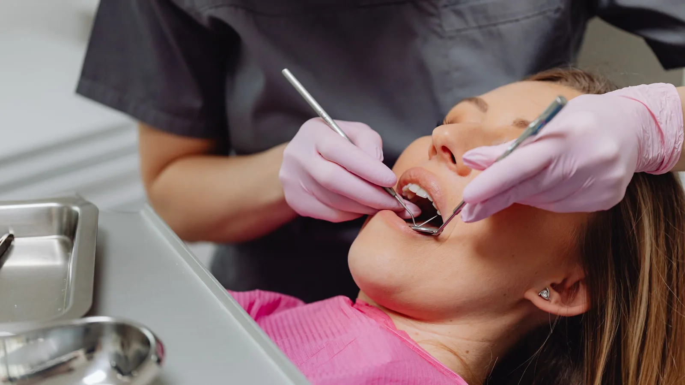

General & Preventive Dentistry
A proper look, and a clean that does not make you flinch.
Most dental problems announce themselves late. Decay between two teeth, a crack running under a filling, early gum inflammation — none of it hurts until it has been going for a while. A regular check-up is the cheapest, least invasive way of catching those things while they are still small enough to be simple.
At Lava Street Dental a routine visit is not a two-minute glance. Dr Meg examines each tooth and existing restoration, checks the health of your gums, looks at how your bite comes together and how your teeth are wearing, and checks the soft tissues of your mouth, tongue, cheeks and throat.
If X-rays are needed to see between teeth or assess a root, she will explain why before taking them. If nothing needs doing, she will tell you that plainly rather than finding something.

A clean that suits sensitive teeth
We clean using an air-polishing system that directs a stream of warm water, compressed air and a very fine powder across the tooth surface. It lifts plaque, biofilm and surface staining from tea, coffee, wine and smoking without the cold-water scrape that many people brace themselves for.
For patients who dread cleans — particularly anyone with cold sensitivity or exposed root surfaces — it is usually a noticeably easier appointment. Where firmer deposits of tartar have built up under the gum, ultrasonic scaling is used as well, because air polishing alone will not shift hardened calculus.
The clean finishes with a polish and, where appropriate, a fluoride application.
What happens after the examination
You will get a straight account of where things stand. If treatment is needed, Dr Meg will explain what the problem is, what the options are, what each option costs and what is likely to happen if you leave it. Anything more involved than routine care is written up as a plan with staged costs before it begins.
Some findings are better watched than treated. A small area of early demineralisation, a shallow crack, a wearing filling that still seals — these can often be monitored and managed with prevention rather than a drill. We will say when that is the case.
How often you should come in
Six months suits a lot of adults, but it is a rule of thumb rather than a rule. Your gum health, decay history, diet, grinding habits, medications and dry mouth all affect the right interval. Some people are better served at three or four months, others can safely stretch to twelve. Dr Meg will recommend a recall interval based on your mouth.
Frequently asked questions
A full examination of your teeth, existing fillings and crowns, gums, bite and soft tissues, followed by a clean, a polish and fluoride where appropriate. X-rays are taken where there is a clinical reason for them and are discussed with you first.
Usually around 45 minutes to an hour, depending on how long it has been and how much cleaning is needed. First appointments generally take longer because there is more history to go through.
Air polishing is more comfortable than traditional scaling for most people, particularly if you get cold sensitivity. That said, everyone is different, and inflamed gums can be tender regardless of the technique. Tell us if something is uncomfortable and we will adjust or stop.
No. The interval depends on your decay risk and what can be seen clinically. Some patients need bitewings every two years, others more often. We will explain the reason before taking any.
No. Long gaps are common and there is usually a reasonable explanation behind them. We work out where things stand, deal with anything urgent first, and build a plan from there at a pace that works for you.
Yes. Gum measurements and bleeding points are recorded as part of the examination, because gum disease is the most common reason adults lose teeth and it is largely painless in its early stages.